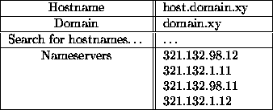
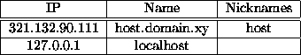
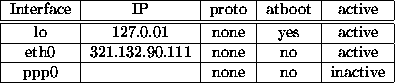
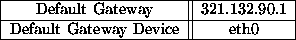
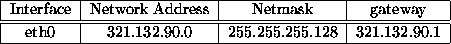

After having installed the right kernel and modules, you are ready to tackle the network configuration. You'll need some information, such as your IP number, name servers, netmask, gateway, domain. The only thing you can do is asking your network administrator and hoping to find him in the right mood. Do not try to connect to the net without the right information. I strongly suggest to read the Ethernet-HOWTO before starting messing with the configuration.
As soon as you have all the nice numbers you need, open the network configuration tool typing, in a shell window, netcfg & and fill all the fields. When fully configured, the Network Configurator will show (PPP connections are treated in the next subsction) something like this (All the numbers you see here are just examples, do not try to use them in your configuration!):




